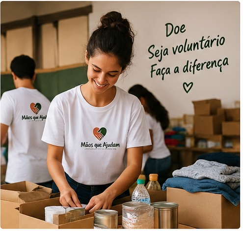

Projetos e Iniciativas Solidárias
Conheça as principais ações desenvolvidas pela ONG Mãos que Ajudam e descubra como você pode contribuir para transformar vidas.

Campanhas de Doação
DoaçãoNossas campanhas arrecadam alimentos, roupas, produtos de higiene e outros itens essenciais para pessoas e famílias em situação de vulnerabilidade.
Como contribuir
Você pode contribuir realizando uma doação de alimentos, roupas ou outros materiais necessários para nossas campanhas.
Voluntariado
VoluntariadoOs voluntários participam de ações comunitárias, campanhas de arrecadação, organização de doações e atividades de apoio às pessoas atendidas pela ONG.
Como participar
Para participar como voluntário, acesse nossa página de cadastro e preencha seus dados para demonstrar interesse em colaborar.
Faça a diferença
Toda contribuição é importante. Seja através de uma doação ou do seu tempo como voluntário, você pode ajudar a construir um futuro melhor.